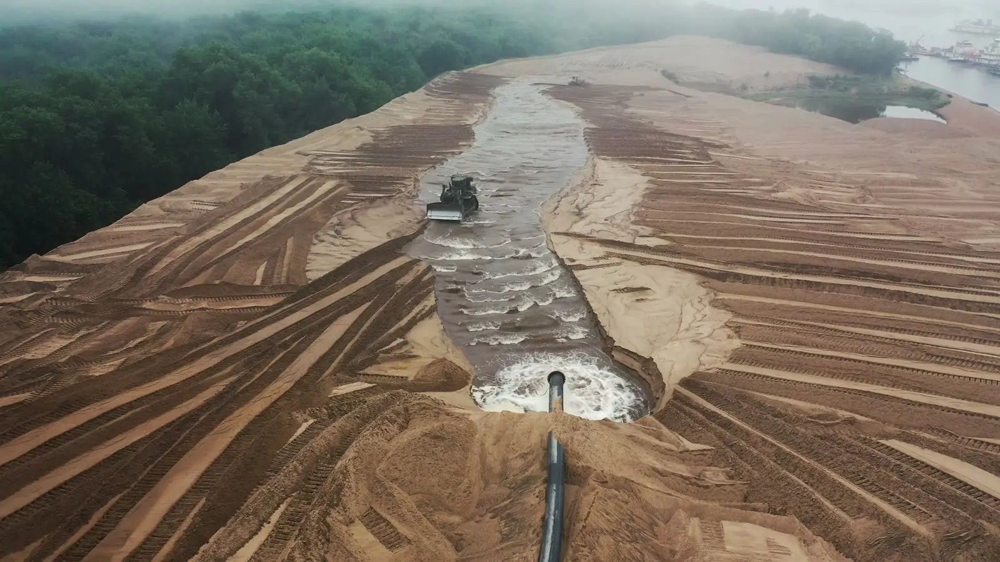

2009-2010 m.4
Vakarinio aplinkelio I etapas
AB „Panevėžio keliai“
Lauko inžineriniai tinklai

Lauko inžineriniai tinklai, siurblinės, žemės ir specialieji darbai. Vamzdynus klojame nuo šaltinio iki galutinio vartotojo.
Įrengiame lauko vandentiekio, buitinių ir lietaus nuotekų tinklus, siurblines bei valymo įrenginius. Nuo privačių projektų iki didelės apimties valstybinių užsakymų.
Lauko inžinerinių tinklų ilgis aštuoniuose didžiausiuose objektuose, kuriuose jis nurodytas projektų sąraše.
36 005 miš viso 15 objektuose su nurodytu ilgiu
Gyvenamieji namai su požeminiais parkingais, Santariškių g. 45
5 800 m
Sandėlis Vilijos g. 2
4 396 m
Prekybos ir paslaugų pastatas Priegliaus ir M. Mažvydo g. sankirtoje
3 879 m
Gyvenamųjų namų kvartalas Džiaugsmo g.
3 800 m
Daugiabučių kvartalas Pilaitės mikrorajone
3 067 m
Ukmergės g., Laisvės pr. ir Ateities g. sankryža
3 000 m
Logistikos centras Dariaus ir Girėno g. 81, I etapas
2 500 m
Sporto ir sveikatingumo kompleksas Ąžuolyno g. 5
2 072 m
Esame atestuoti LR aplinkos ministerijoje (atestato Nr. 5441) ir turime įdiegtas bei sertifikuotas vadybos sistemas.
Taip pat AB „Ogmios centras“, Iberdrola, Mažesniųjų brolių konventualų (pranciškonų) ordino vienuolynas, UAB „Astana“, UAB „BM būstas“, UAB „Baltijos gildija“, UAB „Citus construction“, UAB „Constructus“, UAB „DTC Internacional“, UAB „Geležinkelių projektavimas“, UAB „HES-PRO Vilnius“, UAB „Hermis Capital“, UAB „Lonsta“, UAB „Neste Lietuva“, UAB „Omberg“, UAB „Orsta“, UAB „Ranga IV“, UAB „Romantalis“, UAB „Santariškių namai“, UAB „Sivysta“, UAB „Trakų vandenys“, UAB „Vavista“, UAB „Versina“, UAB „Vilmestos projektai“, VĮ „Visagino statybininkai“.
Skaičius rodo objektų kiekį projektų sąraše (63 objektai nuo 2005 metų).
Papasakokite apie objektą telefonu ar el. paštu arba pateikite užklausą. Aptarsime darbų apimtį ir terminus.
Pateikti užklausąBiurasSavanorių pr. 187, Vilnius
Aurelijus ŽelnysDirektorius
Aidas LiudvinavičiusStatybų vadovas